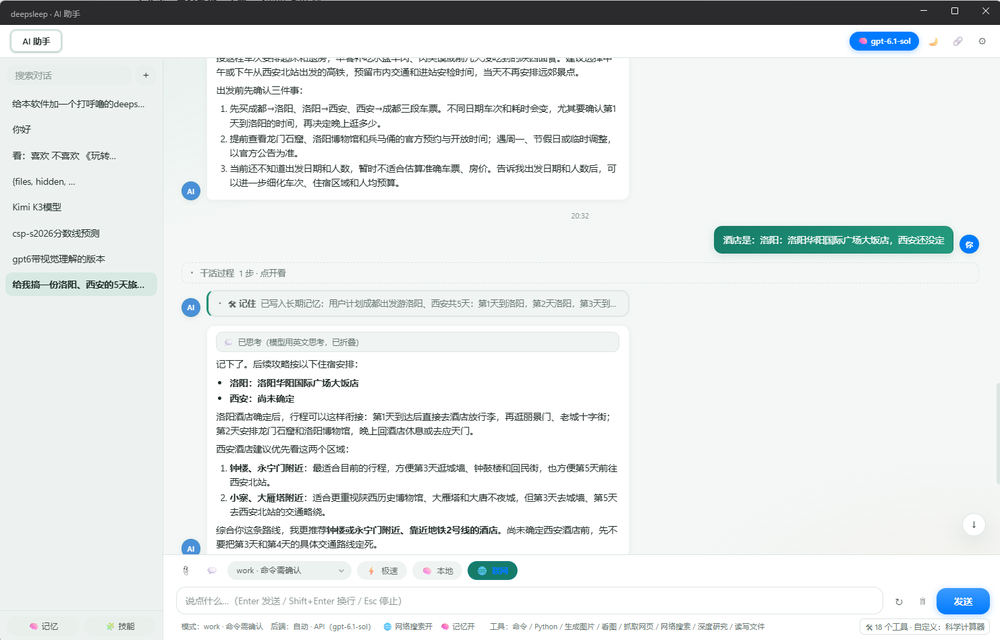
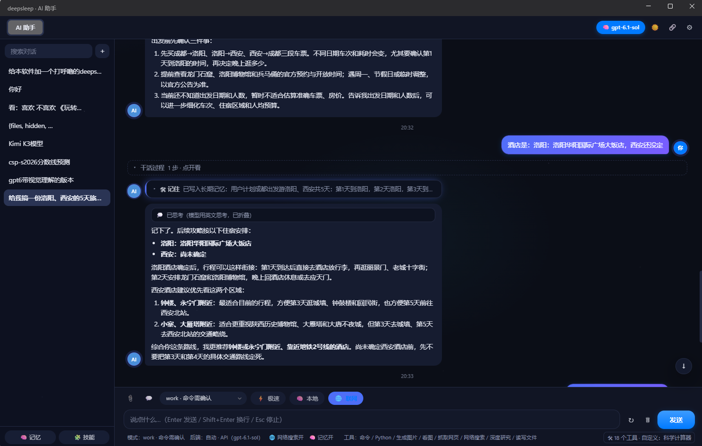

deepsleep 除了聊天，还能读写你电脑上的文件、跑命令、搜网络、写带来源的调研报告、看图、画图，也会记住你的偏好。内核和界面分开，界面是纯 HTML，桌面和浏览器里都能跑。
智谱开放平台的三个免费模型，客户端和网页版都预置好了，网页版还带一把免费 Key。
日常对话、写代码、改文档，也可以当 Agent 的主模型。支持流式输出和长上下文。
截图、照片、表格图片都能读，能认字，也能照着界面图写代码。
一句话出图，生成的图片存在 data\images\，聊天里直接预览。
免费模型有并发限制，人多会排队。填自己的 Key 就走自己的额度，Key 只存在本机或浏览器里。
不是告诉你步骤，而是做完把结果给你。
查资料用「网络搜索」。要调研就交给「深度研究」，它自己拆题、多轮搜索、抓正文，最后把带来源的报告写到 data\research\。
整理资料、批量改名、跑脚本、装依赖都行。work 模式下每一步先问你，boom 模式全自动。
三个都是内置工具，接口地址、Key、模型名可以自己换，智谱、硅基流动、OpenAI 或任意兼容网关都支持。没填 Key 时聊天和画图用内置免费 Key。
你的习惯、项目背景、常用路径存进记忆，之后每轮对话自动带上。
常做的事存成技能或快捷指令，一句话触发整套流程。复杂的任务还能拆给多个 Agent 分头做。
输入框右下角的圆环是当前上下文占用，蓝、橙、红三档。点开能看到占比、条数、当前模型，也能直接改上下文上限（跟随模型、32k、64k、128k、200k、1M、自填）。
一个可拖动的小浮窗，不开主窗口也能派活、看进度。
客户端自己检查新版本，国内走 Gitee，国外走 GitHub，装完自动重启。
一串 6 位配对码把两台设备连起来。同一网络直连，跨网络自动开临时隧道，连上就能在浏览器里操作对方电脑，鼠标键盘和手机触屏都支持。
桌面端在「设置 → 超远程提问」点一下开隧道，内核版加 --tunnel也一样。公网地址免注册，链接里带令牌，手机存成书签，人在外面也能用。
界面是纯 HTML 和 CSS，深浅两套主题各有一份样式，点右上角切换即时生效，不用重启。也可以再装 .dslp皮肤包换外观。


两套主题都跟随系统的「减少动态效果」设置。截图为 3.2.3 的实际运行画面。
不是「一个会调工具的聊天窗口」，而是一套常驻、可调度、可自愈的多 Agent 系统。理解与执行分开，状态全部落库，长任务更稳，断点能续，Agent 之间不互相污染上下文。
会话不再是一个截到 4000 字的快照文件，而是 data/sessions/<sid>.json加一份索引，带 kind（main / worker / router）、parentSid、state、时间和摘要。原子写入，旧数据自动迁移，可以按状态查询。
拆分任务由 Router 统一收口。它持有一份共享简报，里面有全局目标、权限边界、约束、同批角色和已产出的路径，只把这份简报下发给上下文隔离的 Worker。路由判定是毫秒级规则，为什么拆、拆几路可以在「设置 → SuperAgent 架构 → 路由诊断」里看。
Router 和每个 Worker 都是 Session 库里真实存在的会话，状态从 active 走到 done 或 stopped，结果压成摘要。重启后可以按父子关系和状态查回来，在「设置 → 查看会话架构」里能看到这棵两层树。
定时巡检，把不在活跃列表里、超过设定时间没有更新的会话标记为停止，避免卡死的 Worker 一直占着资源。
这一层对普通用户无感，界面和用法不变，只是长任务更稳。
适合不想安装完整客户端，或者想在手机、另一台电脑上遥控本机的情况。
Windows 用 deepsleep-core-3.2.4-win-x64.zip；Linux 用 deepsleep_3.2.4_amd64.deb或 deepsleep-3.2.4-1.x86_64.rpm，也可以下免安装的 deepsleep-3.2.4-linux-x64.tar.gz；macOS 用 deepsleep-core-3.2.4-osx-arm64.tar.gz。桌面版和内核版能力一样，区别只是桌面版默认开窗口，没有桌面环境就加 --headless只跑服务。
deepsleep-core.exe，Linux 和 macOS 执行 ./deepsleep.sh
Windows 会打开本机首页，Linux 和 macOS 直接开一个原生窗口。服务器或 SSH 上加 --headless只跑服务。
启动时会打印端口和配对令牌，在别的设备上连接要用。
本机首页点「内核版网页」。在外面就打开 这个页面，填端口和令牌，也可以直接把 #p=端口&t=令牌拼在地址后面。
--tunnel走内网穿透
运行 deepsleep-core --tunnel，内核会用系统自带的 ssh 建一条免注册的公网隧道，不需要下任何组件，窗口里会打印一条带令牌的访问链接。
在手机上打开那条链接存成书签，出门也能用。打不开多半是运营商 DNS 不解析隧道域名，把手机 DNS 换成 114.114.114.114再试。
桌面客户端不用敲命令，装好后在「设置 → 超远程提问」里点一下就能开关隧道。想用自己的穿透工具也行，frp、cpolar、ngrok、ssh -R 都可以：deepsleep-core --public --tunnel-cmd "你的穿透命令"，内核会从输出里取公网地址。
换令牌用 --new-token，换端口用 --port 8888。Linux 和 macOS 上数据默认放在 ~/.local/share/deepsleep，macOS 是 ~/Library/Application Support/deepsleep。
不用注册，不用配置，也不用懂 NAT 打洞。输一串数字连上，就能远程操作对方电脑。
桌面版点工具栏的链接图标，选「生成配对码」。内核版或 CMD 模式输入 打开超级连接，也可以用 /superlink。
配对码 5 分钟内有效，过期作废，连上以后也不会留着。
手机、平板或另一台电脑的浏览器打开 deepsleep.liziserver.site/superlink/?type=你的配对码，也可以在自己的 deepsleep 里输入这 6 位数字。
同一网络走点对点直连，延迟最低。不在一个网络时自动开一条临时加密隧道，连上之后立刻关掉，数据仍然点对点。
点「打开远程桌面」就能在浏览器里看到对方屏幕，鼠标、键盘、滚轮、手机触屏都能操作。点「打开完整控制台」可以用整套能力。
两个源内容一致，按网络选。海外用 GitHub，整包下载；国内用 Gitee，安装包是分片，要配合并器。客户端支持自动更新，装上以后不用再来这一页。
| 文件 | 说明 | |
|---|---|---|
deepsleep-Setup.exe | 安装版，自动装到本机，带开始菜单和静默升级 | 下载 |
deepsleep-3.2.4-win-x64.zip | 便携版，解压就能跑，不写注册表 | 下载 |
deepsleep-core-3.2.4-win-x64.zip | 内核版（Windows），解压即用，配合网页端操控本机 | 下载 |
deepsleep_3.2.4_amd64.deb | 桌面版 · Debian / Ubuntu（x86_64）：sudo apt install ./deepsleep_3.2.4_amd64.deb，装完在应用菜单里搜 deepsleep |
下载 |
deepsleep_3.2.4_arm64.deb | 桌面版 · Debian / Ubuntu（ARM64） | 下载 |
deepsleep-3.2.4-1.x86_64.rpm | 桌面版 · Fedora / RHEL / openSUSE（x86_64）：sudo dnf install ./deepsleep-3.2.4-1.x86_64.rpm |
下载 |
deepsleep-3.2.4-1.aarch64.rpm | 桌面版 · Fedora / RHEL / openSUSE（aarch64） | 下载 |
deepsleep-3.2.4-linux-x64.tar.gz | 免安装 · Linux x86_64，解压后 ./deepsleep.sh开窗口，服务器加 --headless只跑服务 |
下载 |
deepsleep-3.2.4-linux-arm64.tar.gz | 免安装 · Linux ARM64 | 下载 |
deepsleep-core-3.2.4-osx-arm64.tar.gz | macOS 内核版（Apple 芯片），解压后 ./deepsleep.sh开窗口 |
下载 |
deepsleep-core-3.2.4-osx-x64.tar.gz | macOS 内核版（Intel） | 下载 |
deepsleep-universal-3.2.4.zip | 万能安装程序，按系统自动下对应平台的包 | 下载 |
| 网页版 | 不用下载，浏览器直接打开 | 打开网页版 |
| 文件 | 说明 | |
|---|---|---|
deepsleep-Setup.exe.part1deepsleep-Setup.exe.part2 | 安装版。Gitee 单附件上限 100 MB，安装包切成 2 片，两片都要下，和合并器放在同一个文件夹，双击合并器就会拼回整包并自动安装 | 下载 part1 下载 part2 |
deepsleep-merge-setup.exe | 分片合并器，必须下。校验 SHA-256，拼回 deepsleep-Setup.exe后自动启动安装 |
下载 |
deepsleep-3.2.4-win-x64.zip | 便携版，解压就能跑，不写注册表 | 下载 |
deepsleep-core-3.2.4-win-x64.zip | 内核版（Windows），解压即用，配合网页端操控本机 | 下载 |
deepsleep_3.2.4_amd64.deb | 桌面版 · Debian / Ubuntu（x86_64）：sudo apt install ./deepsleep_3.2.4_amd64.deb |
下载 |
deepsleep_3.2.4_arm64.deb | 桌面版 · Debian / Ubuntu（ARM64） | 下载 |
deepsleep-3.2.4-1.x86_64.rpm | 桌面版 · Fedora / RHEL / openSUSE（x86_64）：sudo dnf install ./deepsleep-3.2.4-1.x86_64.rpm |
下载 |
deepsleep-3.2.4-1.aarch64.rpm | 桌面版 · Fedora / RHEL / openSUSE（aarch64） | 下载 |
deepsleep-3.2.4-linux-x64.tar.gz | 免安装 · Linux x86_64，解压后 ./deepsleep.sh开窗口 |
下载 |
deepsleep-3.2.4-linux-arm64.tar.gz | 免安装 · Linux ARM64 | 下载 |
deepsleep-core-3.2.4-osx-arm64.tar.gz | macOS 内核版（Apple 芯片），解压后 ./deepsleep.sh开窗口 |
下载 |
deepsleep-core-3.2.4-osx-x64.tar.gz | macOS 内核版（Intel） | 下载 |
| 网页版 | 不用下载，浏览器直接打开 | 打开网页版 |
第一次运行 Windows 可能提示「未知发布者」，点「更多信息 → 仍要运行」。安装包的 SHA256 写在 Release 说明里。
Linux 桌面包依赖系统自带的 WebView。Debian 和 Ubuntu 装 libwebkit2gtk-4.1-0和 libgtk-3-0，Fedora 和 RHEL 装 webkit2gtk4.1。
macOS 只发行内核版（deepsleep-core-*-osx-*.tar.gz），解压后 ./deepsleep.sh在系统自带 WebView 里开窗口，要求 macOS 14 或更高。首次运行被 Gatekeeper 拦下时，右键图标选「打开」，再点一次「打开」。
Gitee 上的安装包是分片的，把所有分片和 deepsleep-merge-setup.exe放进同一个文件夹，双击合并器就会按序拼回整包并校验 SHA-256。GitHub 上是完整包，不需要合并。
sudo apt install ./deepsleep_*.deb或 sudo dnf install ./deepsleep-*.rpm，macOS 解压 deepsleep-core-*-osx-*.tar.gz后执行 ./deepsleep.sh。也可以下免安装的 .tar.gz，服务器和 SSH 环境加 --headless只跑内核服务。